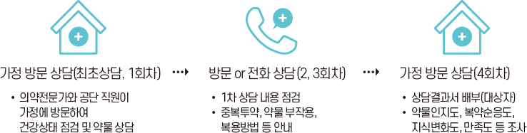
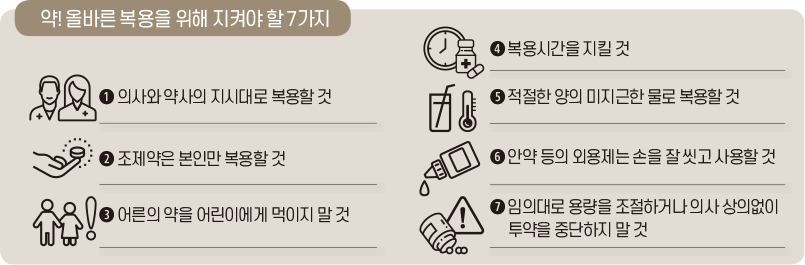
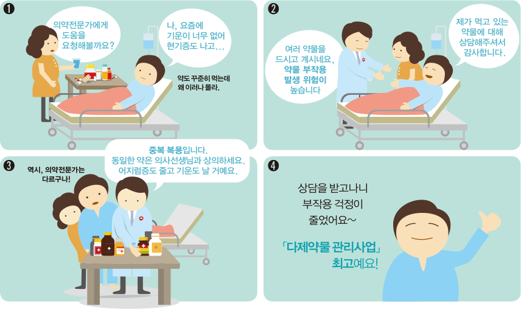

다제약물서비스
- 경기도 공공심야약국
- 휴일지킴이약국
- 다제약물서비스
'다제약물서비스' 란?
다제약물관리 서비스는 65세 이상 만성질환을 앓으며 10가지 이상의 약을 복용하는 사람들을 대상으로 하는 서비스입니다.
이 서비스는 약사가 가정을 방문하거나 환자가 약국을 방문하여 복용 중인 약물을 점검하고, 상담하며, 올바른 복용 방법을 안내해 주는 프로그램입니다.
중복되거나 과다한 약물 복용으로 인한 부작용을 줄이고 건강하게 약을 복용할 수 있도록 돕는 것을 목표로 합니다.
1. 지역사회모형
- 제공서비스
의약전문가(의사, 약사, 간호사)의 가정방문, 약국상담, 유선상담 등을 통한 복용 약 점검 및 약물 상담, 상담의견서 전달, 모니터링 등

- 대상자
건강보험가입자 중 만성질환을 1개 이상 진단받고 상시(6개월간 투약일수가 60일 이상)로 복용하는 약 성분이 10개 이상인 자

2. 병원모형
- 제공서비스
입원 및 외래환자의 복용약물 평가, 퇴원 약물점검, 모니터링, 지역연계 등
- 대상자
65세 이상 건강보험 가입자로 만성질환을 1개 이상 진단받고 상시(6개월간 투약일수가 60일 이상)로 복용하는 약 성분이 10개 이상인 환자 또는 5종 이상 약물 복용하면서 고위험 약물복용 등 다제약물관리가 필요한 환자(병원 상황에 맞도록 기준 선정 가능)
